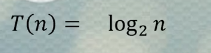
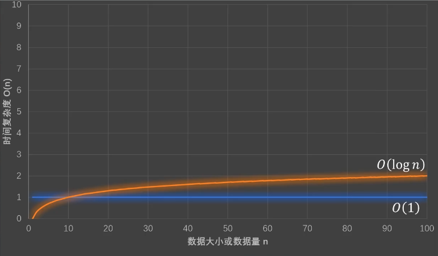
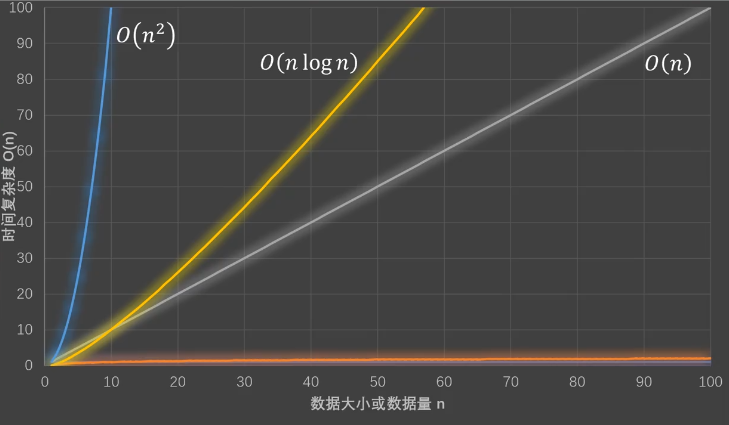
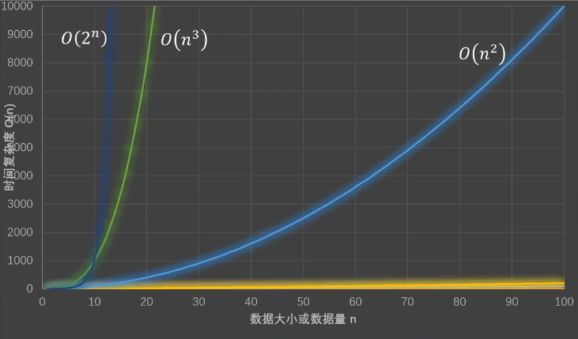
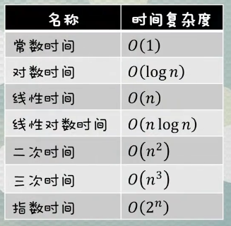

时间复杂度
代码执行次数
调用一次函数fun1，内部一共执行2次语句
1 | function fun1(){ |
调用一次函数fun2，内部一共执行3n+3次语句
1 | function fun2(n) { |
循环执行顺序

由此可以看出（在循环仅运行一次，循环体中代码至少执行一次的情况下）：
- 参数index初始化仅会执行一次
- 自增部分及循环体执行次数为n
- 由于循环以判断开始最后也以判断终止，因此判断会比循环体中的代码多执行一次，即n+1
- return 执行次数为一
因此总的执行次数为3n+3
代码的总执行次数
一段代码的总执行次数会用T(n)表示
n是输入数据的大小或数量
T（n）表示输入为n时，某段代码的总执行次数
时间复杂度
若某段代码的T(n) = 常数
那么这段代码的时间复杂度可以直接估算为1
因此T(n) = 2 的时间复杂度就是 1,即 O(1)
若代码的T(n) = 常数 * n + 常数
当n不断扩大时，第一部分常数*n会不断扩大，而第二部分的常数相对于第一部分就没有那么重要了，就相当于不存在，因此可以直接省略
而第一部分的常数可以直接估算为1，也可以直接理解为去掉这个常数
因此T(n) = 3n+3的时间复杂度就是 n,即 O(n)
而对于带有次方的项T(n) = 常数*n^3 + 常数*n^2
当n不断扩大时，次方大的部分n的扩大更明显，而次方小的部分扩大不明显，因此可以直接省略
之后常数估算为1
因此T(n) = 常数*n^3 + 常数*n^2的时间复杂度为 n^3,即 O(n^3)
总结： 而仅用n表示的时间复杂度并不完整因此需要加上O()，即：
T(n)是不是常数：
- 是： 时间复杂度为O(1)
- 否： 时间复杂度为O(保留T(n)的最高次项并且去掉最高次项的系数)
例
1 | function fun () { |
1 | function fun (n) { |
1 | function fun (n) { |
如果有a重循环，时间复杂度为O(n^a)
1 | // T(n) 为 n^2 + n |
1 | function fun (n) { |
1 | function fun (n) { |
// T(8) = 3 T(16) = 4
// 2^T(8) = 8 2^T(16) = 16
// 2^T(n) = n

最后得出时间复杂度为O(logn)
对数，需要求？的值：
a^? = b
可表示为

常见时间复杂度的速度



时间复杂度排序
